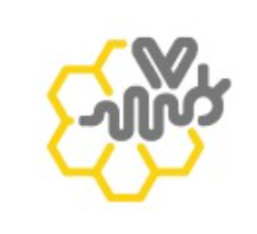

EMBEDDED SYSTEMS • IOT • HARDWARE DESIGN • VALIDATION
Hello, I amHridya Satish Pisharady
Focused on
|
Graduate student at UC Irvine pursuing a Master’s in Embedded and Cyber Physical Systems with GPA 3.89.
I enjoy taking systems from PCB design and board bring up through firmware and sensor interfaces, then validating and debugging them with real measurements until they are deployment ready .
Hardware and firmware work supported by debugging and validation.
About Me
I’m Hridya Satish Pisharady, a Master’s graduate in Embedded and Cyber-Physical Systems from UC Irvine, with a focus on PCB design, system bring-up, protocol-level debugging, and validating hardware with real measurements.
Fun fact: life gave me two choices early on — computers or electronics. I chose electronics, thinking I’d escape coding. Turns out I didn’t. While building a patented medical device, firmware, sensor interfaces, and debugging real hardware pulled me straight into embedded systems.
That experience shaped how I work today. I’m looking to contribute to teams building dependable, field-ready embedded systems where hardware and software decisions matter beyond the lab.
If you are hiring for embedded work where failure is not an option and validation is the proof, let’s connect.
Experience across embedded platforms, robotics subsystems, and edge systems.
Mar 2025 – Present
Synaptics Incorporated
Embedded Systems & IoT Apprentice
Yocto LinuxGPIO bring-upSensor integrationEdge AI (SyNAP)Threading
Built and validated a wearable navigation assistant on the Synaptics Astra platform by bringing up low-level
GPIO/sensor interfaces on Yocto Linux, integrating real-time feedback loops, and debugging timing + reliability
issues using structured logs and repeatable field tests.
Performed board bring-up: GPIO offset mapping, pin validation, and stable sensor readouts under Yocto Linux.
Integrated ultrasonic sensing pipeline and tuned trigger/echo timing to reduce false positives and missed detections.
Implemented IMU-based fall detection with data logging + threshold tuning to improve robustness across user motion profiles.
Supported edge-AI workflow by converting and testing models through SyNAP offline optimization and runtime validation.
Ran repeatable indoor/outdoor test walks and used logs to isolate intermittent timing/latency issues.
Result:
Delivered a stable end-to-end sensing + feedback pipeline with a reproducible bring-up/debug workflow that improved iteration speed and system reliability.
Jun 2025 – Sep 2025
Canvas Construction Inc
Electrical Engineering Intern
KiCadPCB bring-upCAN (TWAI)Power designValidation
Owned the prototyping cycle for an industrial ESP32 CAN node: schematic + PCB layout, assembly, bring-up,
and communication diagnostics. Focused on power integrity, noisy I/O interfacing, and measurement-driven validation.
Designed and validated a 24V→3.3V supply stage with correct passives/decoupling for stable embedded operation.
Built robust I/O conditioning for higher-voltage signals and verified behavior under realistic load/noise conditions.
Performed CAN diagnostics using PCAN tools; verified bitrate, termination, and repeatable frame RX/TX.
Used LTspice + oscilloscope measurements to debug power/signal issues and guide PCB iterations.
Iterated ERC/DRC + layout fixes to prevent bring-up blockers and improve manufacturability.
Result:
Produced a bring-up-validated CAN node prototype with stable power and repeatable bus communication, ready for expansion to additional I/O and CANopen mapping.
Dec 2022 – Apr 2023
GradeUp
Embedded Systems Developer
ESP8266Embedded CInterruptsWi-FiWeb UI
Developed ESP8266 firmware for a home automation use-case, focusing on responsive interrupt-driven behavior,
sensor-driven logic, and a lightweight web interface for monitoring and control.
Implemented interrupt-driven GPIO handling to improve response time and avoid polling delays.
Integrated PIR-based motion logic for automated lighting control and reliable state transitions.
Built a simple web UI to monitor device status and trigger actions remotely over Wi-Fi.
Added structured logging and repeatable test runs to validate timing and functional correctness.
Result:
Improved responsiveness and stability of the firmware through interrupt-based design and repeatable validation workflows.
May 2021 – Jul 2021
SmartKnower
IoT Intern
IoTSensorsMicrocontrollersNetworkingDebugging
Worked on IoT prototypes integrating sensors and microcontroller firmware, focusing on end-to-end connectivity,
data handling, and validating behavior under different operating conditions.
Integrated sensor peripherals and validated readings using calibrated test cases.
Built basic data collection + transmission workflows and verified reliability through repeat runs.
Documented setup, wiring, and debug steps to make builds reproducible for others.
Result:
Strengthened hands-on skills in sensor integration, firmware debugging, and IoT data flow validation.
Aug 2020 – Apr 2021

Beeclust Multi-Robot Systems Lab
Junior Embedded Engineer
ArduinoMotor controlPID tuningPCB designTesting
Built and validated a line-following robot platform with real-time control, sensor calibration,
and iterative testing. Worked across firmware + hardware integration to improve stability and performance.
Implemented PID steering with 5-sensor IR array and tuned constants through repeated track trials.
Debugged motor saturation/oscillation issues by mapping error to differential PWM and refining control logic.
Supported hardware integration and PCB iterations for cleaner sensor signals and stable motor routing.
Result:
Achieved ~98% line tracking accuracy and improved stability under lighting/track variations through iterative tuning + validation.
Jul 2020 – Dec 2021
Aaruush, SRM University
Committee Head (Electronics) • Student Technical Leadership
Team leadershipEvent executionStakeholder coordinationTechnical planning
Led the Electronics domain for Aaruush by planning and executing technical events, coordinating teams,
and ensuring end-to-end readiness of demos, rules, and on-ground operations for participant-facing events.
Owned event planning timelines and coordinated execution across multiple teams and dependencies.
Defined technical rules, judging criteria, and troubleshooting flow for smooth on-ground operations.
Managed volunteers, handled last-minute issues, and ensured events ran reliably under real constraints.
Result:
Delivered successful event execution with consistent participant experience through structured planning and fast on-site decision making.
Projects
Firmware, hardware, networking, and real-time systems work.
Industrial CAN node prototype that bridges 24V machine I/O to 3.3V embedded logic with robust power conditioning, protected digital/analog front-ends, and bring-up-validated CAN communication for distributed control.
Problem / Task: Build a rugged CAN node for an industrial robot that safely interfaces noisy 24V I/O (digital + analog) with 3.3V embedded electronics and supports reliable bus communication with a path to CANopen.
Solution: Designed the schematic + PCB in KiCad around ESP32-C6 (TWAI) with a TJA1051T/3.3 CAN transceiver, implemented a 24V→3.3V buck supply with correct passives and decoupling, and added I/O conditioning using MOSFET-based level shifting for 24V digital inputs plus voltage-divider + op-amp buffering with low-pass filtering for analog sensing.
Validation: Verified bitrate, wiring, termination, and bidirectional CAN traffic using PCAN-USB/PCAN-View; validated filter cutoff/phase and transient response in LTspice using .ac/.tran and Bode plots; iterated ERC/DRC fixes (power flags, net labeling, grounding) to ensure stable bring-up.
Result: Achieved stable 3.3V regulation from a 24V rail, protected 24V-to-logic interfacing, and repeatable CAN bring-up with clean frame RX/TX—delivering a reusable hardware platform ready for expansion to more I/O channels and CANopen application-layer mapping.
Edge-AI wearable navigation assistant on Astra SL1680, integrating multi-sensor inputs with low-latency feedback loops and embedded Linux bring-up/debug workflows.
Problem / Task: Build an Edge-AI wearable navigation assistant for visually impaired users that combines semantic scene understanding with reliable obstacle and fall detection on an embedded Linux platform.
Solution: Performed board bring-up on Yocto Linux (GPIO offset mapping + sysfs control), integrated ultrasonic sensing, IMU-based fall detection, and implemented thread-safe real-time loops for feedback delivery.
Validation: Verified GPIO timing and sensor behavior with structured logs, tuned thresholds/filters to reduce false triggers, and ran repeatable indoor/outdoor test paths to validate stability over longer runtimes.
Result: Achieved a stable runtime pipeline that supports low-latency guidance through haptics/audio and a reproducible bring-up/debug workflow that accelerated iteration and field testing.
More projects
See additional work in Real-Time Linux, Robotics, IoT networking, and ML on MCU.
Problem / Task: Improve determinism and throughput of a compute-heavy Canny edge pipeline on a Raspberry Pi under CPU contention, while minimizing jitter for real-time behavior.
Solution: Patched/used PREEMPT_RT and migrated parallelism from OpenMP to Pthreads; pinned threads with CPU affinity and applied RT scheduling (SCHED_FIFO) to prioritize critical stages.
Validation: Instrumented per-stage timing, measured jitter under background load, and iterated thread placement/scheduling parameters to reduce latency spikes and context-switch overhead.
Result: Achieved a more deterministic runtime profile with lower jitter and more consistent frame processing—plus a repeatable methodology for RT tuning on embedded Linux.
Problem / Task: Build a stable, fast line-following robot that can handle sharp turns, varying lighting, and track discontinuities without oscillation.
Solution: Implemented PID steering using a 5-sensor IR array; calibrated sensor thresholds, mapped error to differential motor PWM, and integrated an H-bridge motor driver on a custom PCB for robust routing and power handling.
Validation: Ran repeated track trials to tune Kp/Kd and eliminate oscillations, debugged motor saturation/overshoot, and iterated hardware wiring/PCB routing for cleaner sensor signals and consistent motor response.
Result: Delivered ~98% line-tracking accuracy and earned a competition runner-up finish with reliable real-world performance.
Problem / Task: Coordinate multiple ESP8266 nodes to autonomously select a “master” based on real-time sensor readings and ensure the system remains stable under resets and node dropouts.
Solution: Built a lightweight UDP multicast protocol for periodic broadcasts and implemented deterministic leader election; routed master data to a Raspberry Pi for centralized logging and control (start/stop + reset flows).
Validation: Tested re-election under forced failures, verified packet timing/ordering, and used CSV logs + plots to detect anomalies (missed packets, thrashing, stale master selection).
Result: Achieved repeatable master election and resilient swarm behavior with end-to-end observability, enabling debugging and performance tracking over time.
Optimized and deployed a digit classifier to an EFM32 microcontroller by pruning parameters and quantizing to INT8 while tracking accuracy vs memory/energy.
Problem / Task: Fit a digit-classification CNN onto a resource-constrained EFM32 microcontroller while preserving accuracy and reducing RAM/Flash and energy cost.
Solution: Trained the baseline model in MATLAB, applied iterative structured pruning (L1-based scoring) with accuracy checkpoints, then quantized the pruned model to INT8 for compact deployment.
Validation: Benchmarked accuracy vs pruning level, verified memory footprints (RAM/Flash) and energy/runtime on-board, and compared pre/post optimization tradeoffs with repeatable evaluation runs.
Result: Produced a deployable INT8 model with substantially reduced footprint and measurable efficiency gains, while maintaining usable classification accuracy for edge inference.
Education
Coursework supporting embedded, circuits, and real time systems.
University of California, Irvine
Master’s Degree
Embedded and Cyber Physical Systems
Sep 2024 – Dec 2025Irvine, CA
GPA 3.9 / 4.0
Selected Coursework
Embedded Systems Modelling
Real Time Operating Systems
Wireless Sensors and Actuators
IoT Systems
Machine Learning for Embedded Systems
Control Systems
SRM Institute of Science and Technology
Bachelor’s Degree
Electronics and Communication Engineering (Instrumentation)
Jun 2019 – Jun 2023Chennai, India
GPA 3.72 / 4.0
Selected Coursework
Signals and Systems
Digital Signal Processing
Analog and Digital Circuits
Microcontrollers and Embedded Systems
Communication Systems
Control Systems
Patent
Applied research and prototyping with embedded sensing and feedback.
Sensor Based Physics Forceps for Tooth Extraction
Patent No. 542943Sep 2022 – Jul 2024
Embedded sensing system that monitors applied dental force in real time and provides feedback to reduce unsafe extraction pressure.
Built and validated a compact pressure + motion feedback system that improves operator awareness during extraction.
Abstract
Designed a sensor-assisted dental forceps system to measure force applied by the practitioner and provide feedback when unsafe thresholds are exceeded.
The goal was to reduce over-force events and improve repeatability during extraction by combining embedded sensing, firmware processing, and user feedback.
What I built / implemented
Selected and integrated an FSR at the thumb pressure point to capture applied force in a mechanically constrained handle design.
Implemented ESP32 firmware to sample, filter, and threshold sensor readings for real-time alerts.
Added motion/angle monitoring using MPU6050 over I2C to correlate handling posture with force patterns.
Designed feedback behavior (audio / haptics / app notification) to make warnings immediate and usable in practice.
Iterated mechanical placement + protection to improve sensor durability during repeated real-world testing.
Results / impact
Achieved repeatable force detection and stable alerting under varying grip and pressure conditions.
Validated sensing placement through multiple physical trials on artificial teeth to confirm realistic load points.
Delivered a working prototype strong enough to support a granted patent outcome and documentation.
If you are hiring for embedded or hardware roles, let’s connect.
I enjoy building embedded systems that stay reliable outside the lab from PCB bring up and signal integrity checks to firmware debugging and repeatable test flows.
If you are hiring for embedded systems , hardware bring- up or similar roles, I would love to share my projects and how I approach bring up and validation.